|

STAR TREK II:
THE WRATH OF KHAN
1982


Sinopse
comentada
Comentrios
Citaes
Efeitos
Especiais
Trilha Sonora
Trivia
Ficha
Tcnica
O
DVD
Quando Harve Bennett foi chamado a produzir a sequncia de "Jornada nas Estrelas: O
Filme", a "primeira diretriz" dada pelo estdio foi basicamente "faa o que quiser, mas faa barato". Nascido em bero televisivo, Bennett sabia muito bem como economizar em produes, fazendo-as parecer muito mais caras do que realmente eram. Basicamente, foi o que ele fez com
"A Ira de Khan".
A primeira providncia foi chamar uma equipe experiente com aventuras espaciais para fornecer os efeitos. A empresa contratada foi a ento hegemnica Industrial Light & Magic, criada por George Lucas para revolucionar as tcnicas de efeitos visuais com seu "Star Wars".
Com o furor dos Jedis, no era difcil entender por que a ILM era a mais cara das produtoras de efeitos especiais de Hollywood na poca. Mesmo assim, o uso de tcnicas simples e a encomenda racional de tomadas de efeitos, somente quando eles eram absolutamente necessrios, acabaram garantindo um baixo custo para a produo.
Uma das providncias que Bennett e seu diretor, Nicholas Meyer, decidiram tomar logo de cara foi ver que partes de seu roteiro podiam ser contadas com efeitos visuais produzidos (utilizados ou no) para
"Jornada nas Estrelas: O Filme". Quem prestar ateno vai descobrir que todas as cenas da Enterprise at a chegada da nave estao Regula I j apareceram antes na primeira aventura cinematogrfica da srie.
Em vez de tornar o filme "barato" aos olhos do pblico, a estratgia mostrou a inteligncia e a capacidade de tomar decises da dupla Bennett e Meyer. E mais: permitiu que a ILM torrasse todo o seu oramento em cenas que realmente importavam, dando origem a uma das mais clebres batalhas espaciais da histria de
Jornada nas Estrelas.
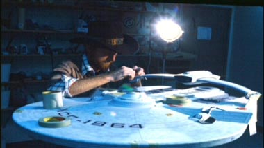
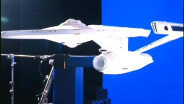
Mesmo os grandes efeitos do filme so em geral bastante simples, e lembrar como foram obtidos nos ajuda a mergulhar numa poca em que criar efeitos era uma tarefa criativa e que exigia mltiplas respostas, no somente sentar-se num computador e criar virtualmente a coisa toda.
A tomada inicial de "A Ira de Khan", por exemplo, com o fundo de estrelas passando pela cmera, foi feita filmando a projeo do espao num planetrio! Simples e eficiente.
A nebulosa Mutara, que acabaria figurando em muitos episdios de Jornada pelos anos seguintes, foi criada com um aqurio com diferentes camadas de tinta, filmadas numa velocidade em que o movimento das diferentes cores aparentava mais rapidez do que era de fato no lquido filmado.
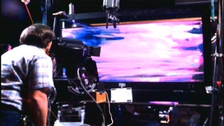
As tomadas com as duas naves e a estao Regula I foram todas feitas com modelos em miniatura. Detalhe: Regula I nada mais era do que a estao orbital em que Kirk encontra Scotty em "O Filme", s que virada de cabea para baixo.
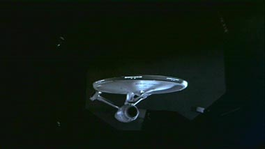
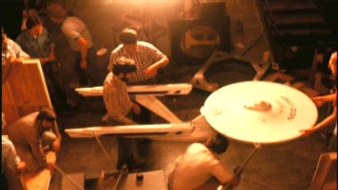
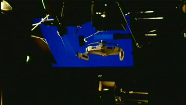
Flashes de luz sobre os modelos criavam os efeitos de turbulncia dentro da nebulosa. E cada um dos diferentes sistemas de iluminao acoplados s naves era filmado separadamente -- a juno de todos eles numa s tomada formava o produto final.
Os criadores tiveram o trabalho de iluminar as naves de uma forma ligeiramente diferente da usada em "Jornada I", tornando as cenas mais intimistas e mais vivas do que as obtidas para o primeiro filme.
Lado revolucionrio
Embora a imensa maioria dos efeitos do filme tenha sido obtida com tcnicas tradicionais (claro, sempre com uma certa dose de criatividade por parte dos profissionais da ILM), "A Ira de Khan" tambm foi o responsvel por uma das maiores inovaes da histria do cinema -- o incio da verdadeira revoluo que culminou nas produes modernas: a introduo de grficos realistas criados por computador.
A demonstrao do projeto Genesis que Kirk projeta em sua cabine era fruto de um experimento em mais de um sentido: a sequncia inteira foi totalmente criada por computador -- desde as tomadas espaciais ao efeito Genesis e transformao da lua deserta num planeta vivo e habitvel.
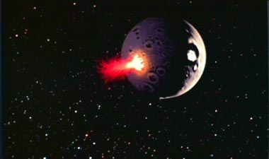
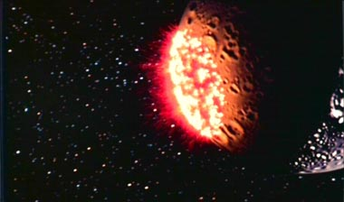
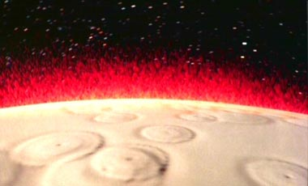
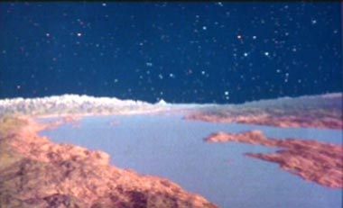
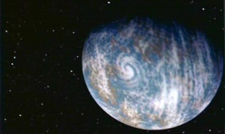
Foi a primeira vez que um grfico gerado por computador teve um destaque to grande num filme, abrindo caminho para a revoluo do CGI (Computer-Generated Imagery) que hoje domina os efeitos de praticamente todas as produes que exigem tomadas de efeitos complexas.
Claro, pequenos artefatos computadorizados j existiam antes (como o prprio diagrama da Enterprise que abre o filme, num dos monitores da ponte), mas nunca um efeito criado em computador tinha se destinado a imitar com (suposta) perfeio a realidade.
Com a combinao de estratgias eficientes de produo de efeitos, reciclagem de material do filme anterior e a dosagem certa de inovao, "A Ira de Khan" consegue o que parecia impossvel, ao menos em termos tcnicos: ser melhor e muito mais barato que seu antecessor.